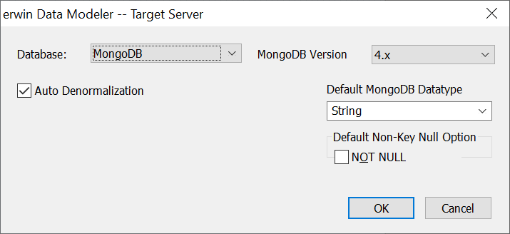
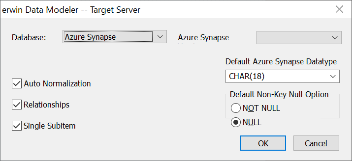

While working with a physical model, you can select or change the target DBMS for the physical schema, and define default settings to use when you generate the schema.
To select or change the target DBMS
On the status bar, click the database name.
The erwin Data Modeler -- Target Server dialog box opens.
Lets you specify the target DBMS.
If your current database is a relational database and you select a NoSQL database, the Auto Denormalization check box appears.

If your current database is a NoSQL database and you select a relational database, the Auto Normalization, Relationships, and Single Subitem check boxes appear.

Use these options to migrate your models from relational to NoSQL and vice versa. However, this migration method overwrites the existing model once you save it. Hence, it is recommended that you keep a backup of your original model.
<Database> Version
Lets you specify the software version for the DBMS you selected for the Target DBMS option.
Lets you specify the delimiter for trigger code that you want to appear in the schema DDL for Db2 LUW and Db2/zOS.
Lets you specify the location of create, write, and delete triggers for Progress DBMS.
Lets you select the decimal point indicator to use when you add a column to a Db2/zOS model.
Lets you specify the connection library (dblib or ctlib) to use to connect to your SAP ASE and SAP IQ database.
Lets you specify the default datatype to use when you add a column to the model.
Specifies the default null option that you want to assign when you add a column to the model. The default null options include:
NOT NULL - This option is available for all target databases.
NULL - This option is only available for SAP ASE, MySQL, SQL Server, and Oracle.
Your selections are saved and the erwin Data Modeler -- Target Server dialog box closes.